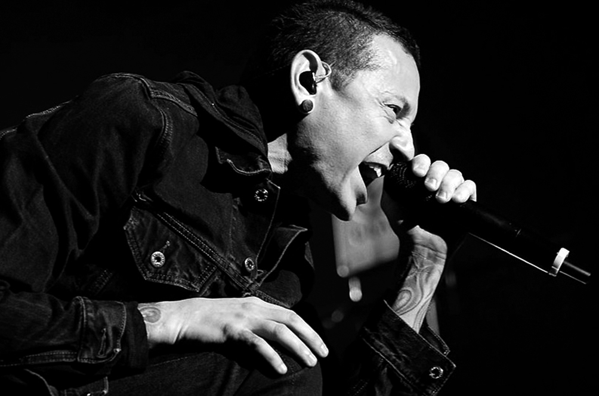
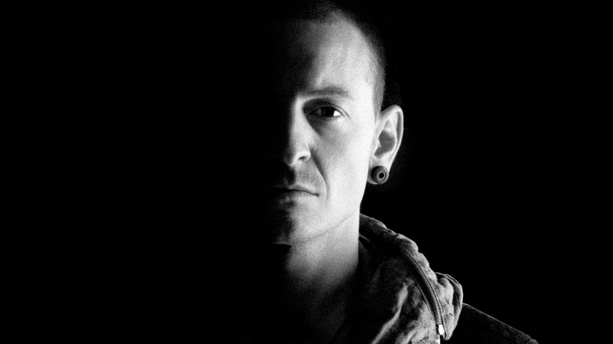

Home
(current)
Songs
Memories
Blogs
Lyrics
In the End
Numb
Leave Out All the Rest
One More Light
Blogs
Linkin Park and musical success
Chester Bennington packed his bags and moved to Los Angeles. In 1999, he became the final member of the expanding rap-metal act called Linkin Park. Bennington was actually the one who came up with the band’s name replacing their former name Hybrid Theory, which became the title of their debut album. Hybrid Theory hurled Bennington’s musical talent into the limelight and gave him the much-deserved recognition as one of the 21st centuries most iconic music figures. Bennington was known for his high-pitched and emotional screaming, which often talked about his feelings of disconnect from the world. His addiction came back into the picture during the early stages of Linkin Park’s success. In an interview with The Guardian, Shinoda said, The tours we did in the beginning, everybody was either drinking or doing drugs. I can’t think of any that were sober. However, Chester Bennington ditched drugs in 2006 and celebrated his continued sobriety in the late 2000s. In a 2009 interview with Spin, Bennington said, “It’s not cool to be an alcoholic it’s not cool to drink and be a dumbass. It’s cool to be a part of recovery, most of my work has been a reflection of what I’ve been going through in one way or another.”

Aside from his work with Linkin Park, Bennington had side projects including Dead by Sunrise and supergroup Kings of Chaos. He also fronted Stone Temple Pilots from 2013 to 2015. In 2015 he left Stone Temple Pilots so that he could focus on his family and Linkin Park. Even though Bennington achieved great success with Linkin Park and his various collaborations, he always made an effort to remain grounded. In 2016, Bennington told Metal Hammer, “The idea that success equals happiness pisses me off. It’s funny to think that just because you’re successful you’re now immune to the full range of the human experience.
How Chester Bennington’s Dark Passengers Shaped His Life: Child Abuse, Addiction and Depression
Chester Bennington has had a lot of hardship in his life, starting with his far from ideal childhood. He experienced sexual abuse when he was around seven years old, which he told Metal Hammer, destroyed by self-confidence. “Like most people, I was too afraid to say anything. I didn’t want people to think I was gay or that I was lying. It was a horrible experience.” His parents then divorced at the age of 11 and he had to move in with his father. At an attempt to numb his pain and loneliness, Bennington turned to substance abuse. He started abusing alcohol , marijuana, opium and more. He told Metal Hammer, “I was on 11 hits of acid a day. I dropped so much acid I’m surprised I can still speak.” When he reached his teenage years, Chester Bennington had developed a heavy methamphetamine and cocaine habit. He moved in with his mother when he turned seventeen, which is when she caught him using drugs and forbade him to leave the house. In the interview, Bennington recalled, “my mom said I looked like I stepped out of Auschwitz. So I used pot to get off drugs. Every time I’d get a craving, I’d smoke my pot.” In order to make some money, Bennington started to work at Burger King and other odd jobs. In 1992, a gang broke into his friend’s house where he was using drugs and pistol-whipped his friends, which caused him to leave drugs behind. However, addiction eventually found its way back into this life later on. Bennington continued to dream of being a rock star – a dream that he had had ever since he was a child. He ended up joining a local Band called Grey Daze as their lead singer in 1993. The band developed a generous following with fans in the Phoenix area, however, Bennington became increasingly dissatisfied with the group and eventually left in the late 90s due to creative differences.

When he reached his teenage years, Chester Bennington had developed a heavy methamphetamine and cocaine habit. He moved in with his mother when he turned seventeen, which is when she caught him using drugs and forbade him to leave the house. In the interview, Bennington recalled, “my mom said I looked like I stepped out of Auschwitz. So I used pot to get off drugs. Every time I’d get a craving, I’d smoke my pot.” In order to make some money, Bennington started to work at Burger King and other odd jobs. In 1992, a gang broke into his friend’s house where he was using drugs and pistol-whipped his friends, which caused him to leave drugs behind. However, addiction eventually found its way back into this life later on. Bennington continued to dream of being a rock star – a dream that he had had ever since he was a child. He ended up joining a local Band called Grey Daze as their lead singer in 1993. The band developed a generous following with fans in the Phoenix area, however, Bennington became increasingly dissatisfied with the group and eventually left in the late 90s due to creative differences.
Create new Blog
Login Form
Login
×
Username
Password
Login
Remember me
Create New Blog
Create
<